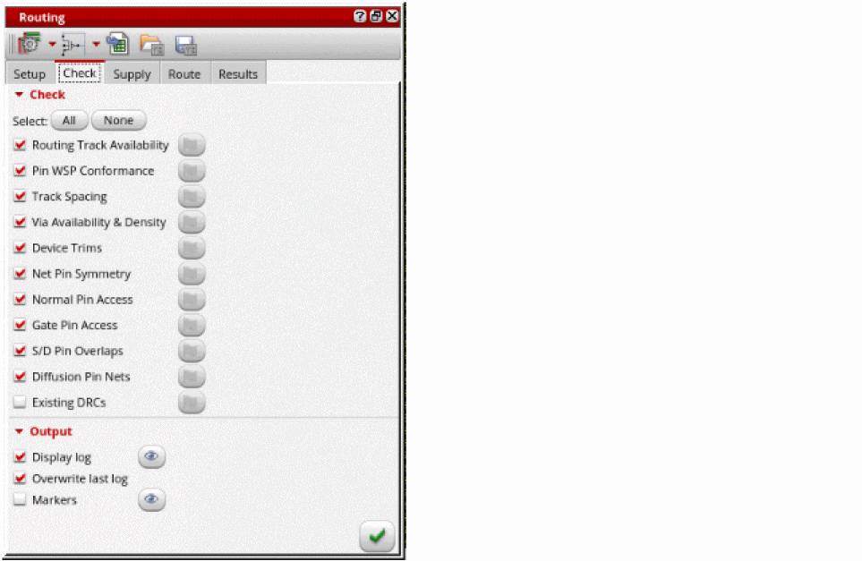
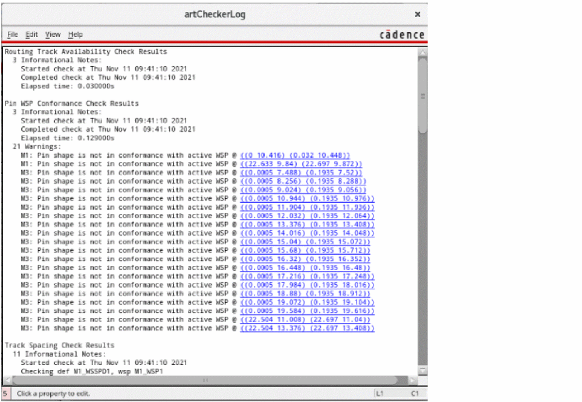

Checking Layout Routability after Generating Grids and Running Device Placer
You can run pre-routing checks to detect design issues before routing a design. Running the checks lets you identify potential situations or objects that may cause trouble for the router later in the flow.
To check the routability of a design:
- Open a design in Layout MXL.
-
Choose Window – Assistants – Routing.
Alternatively, right-click anywhere on the layout window menu bar and choose Assistants – Routing. -
In the Routing assistant, choose the Check tab.
 - Click All to select all pre-routing checks or select the required checks by clicking the check box next to the pre-route check name.
-
Click Run pre-route checks
.
After running the checks, green, orange, and red status flags appear that indicate whether the check was passed, there was a warning, or there was an error. No red flags indicate that the design is correctly set up.
Clicking the button against each flag takes you to the location in the log file where that check result was logged. -
Click the Display existing log file button next to the Display log option to view the log file and check for any issues.
The log file provides additional information with clickable links to show the issue in the layout. You can also view the issues in the Annotation Browser using the Markers option.
Related Topics
Generating Width Spacing Patterns for Device-level Routing
Configuring Device-Level Router Settings
Return to top